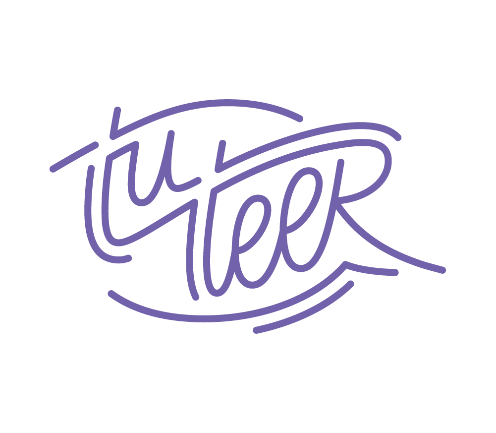
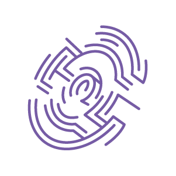
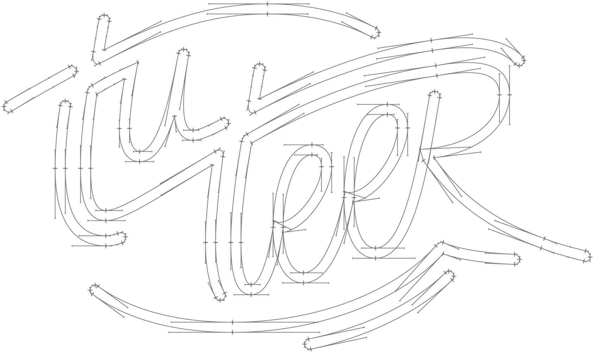

THE BRIEF was to create a brand logotype and iconography for a startup online tutoring business, Tuteer ▸. The ask was that it would evoke positive connotations of teaching and learning in a modern way that resonates with an audience of ambitious young people and their parents and express company’s online operation platform.





Icons that represent each school subject or profile covered by Tuteers’s offer: biology, biology with chemistry, engineering, literature, mathematics, chemistry, psychology, programming, physics
© 2022 Mikołaj Grabowski, Aneta Zdziech
